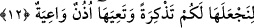
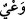

çekilmektedir. Çünkü insanların babalarının boğulmaktan kurtulmaları, onların dünyaya
gelmelerine sebebtir.
Âyette “câriye” kelimesi, Nûh’un gemisi anlamında kullanılmıştır. “Câriye” akıp
giden anlamına gelir. Nûh’un gemisine bu ismin verilmesi, geminin su üzerinde akıp
gitmesinden dolayıdır. Onların gemi içinde taşınmalarından maksad ise, tufan günleri
bitene kadar suyun üstünde yükseltilmeleri ve tutulmalarıdır. Yoksa sırf gemiye
yükseltilmeleri değildir. Nitekim âyetteki “fî” harf-i cerri bunu ifâde etmektedir. Çünkü
“fî”, “taşımak” anlamına gelen “haml” kelimesine değil aksine mahzuf bir kelimeye
bağlıdır. O mahzuf kelime de “taşıma” fiilinin mef’ûlünden hâldir. Buna göre âyet-i
kerîmenin anlamı şöyle olur: Sizleri suyun üzerine kaldırdık. Bizim emrimizle su
üzerinde akıp giden gemilerde olmak üzere sizleri koruduk ve sizi suda boğmaksızın ve
yakmaksızın muhâfaza ettik. Bu âyet-i kerîmede o kâfirlerin kurtuluş kaynaklarının sırf
Allah’ın koruması olduğuna, geminin ise sâdece şeklî bir sebep bulunduğuna uyarı ve
dikkat çekme vardır.
12. Onu sizin için bir ibret ve öğüt yapalım ve belleyici kulaklar onu bellesin diye.
“Onu” yâni müminleri kurtarmaktan ve kâfirleri suda boğmaktan ibâret olan o fiili
“sizin için bir ibret”, yaratanın kudretinin ve hikmetinin kemaline, kahrının gücüne,
rahmetinin genişliğine bir delil “ve öğüt yapalım ve belleyici kulaklar onu bellesin
diye.”
Kâşifî der ki: O gemiyi sizin için, mü’minlerin kurtuluşu ve kâfirlerin helâk olması
konusunda bir nasîhat ve ibret kıldık.”
Keşfu’l-esrâr’da denilir ki: Dünya var oldukça bunu geride bir hâtıra olarak bıraktık.
“Onu yapalım” şeklinde tercüme edilen “linec’alehâ” fiilindeki zamir âyetin
devamında yer alan ve “bellemek” fiilinin delâlet etmiş olduğu fiil ve hikâyeye delâlet
etmektedir.
Bu ümmetin ilk nesli Nûh’un gemisini görmüştür. Geminin yapıldığı tahtalar Cûdî
dağı üzerinde idiler.
“Bellesin” şeklinde tercüme edilen “
/te’ıyehâ” fiilinin anlamı “korusun, muhâfaza
etsin” demektir. Bu fiilin masdarı olan “
/va’y” bir kimsenin bilgiyi tutması ve
koruması demektir. Arapçada “
/ va ayte’ş-şey’e fî nefsike”
dendiğinde “sen o şeyi nefsinde muhâfaza ettin” denmiş olur. Yine “
/va aytu ma
kultehu” derlerki anlamı “senin dediğin şeyi ben belledim” demektir. Bu kelime
Peygamberimiz (s.a.)’in bir hadislerinde şöyle yer alır: “Hayatta hiçbir hayır yoktur.
Bundan konuşan âlimle, duyduğunu belleyen kişinin yaşantısı müstesnâdır.” [65]